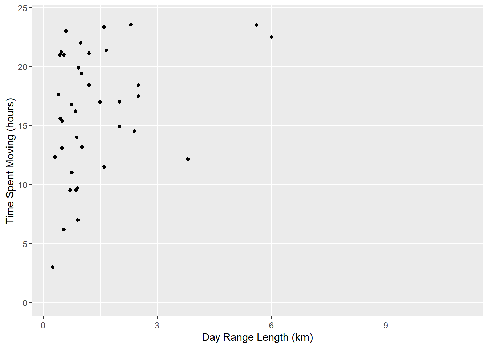
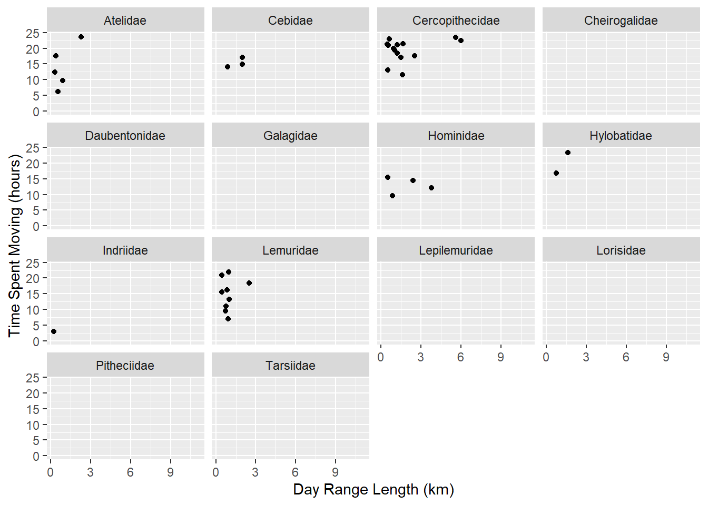
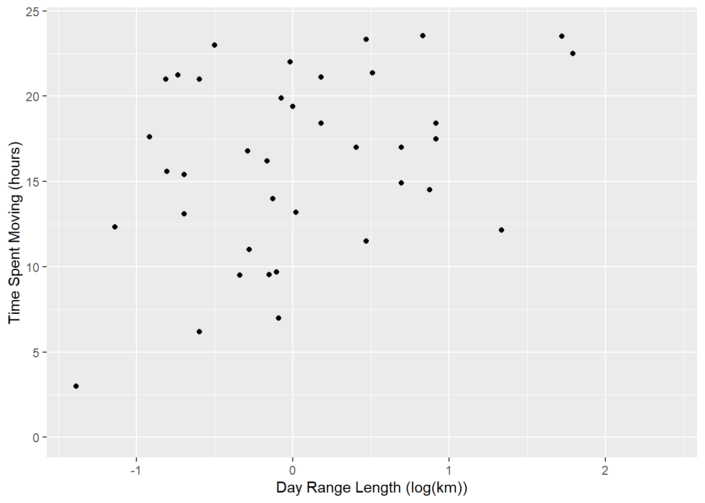
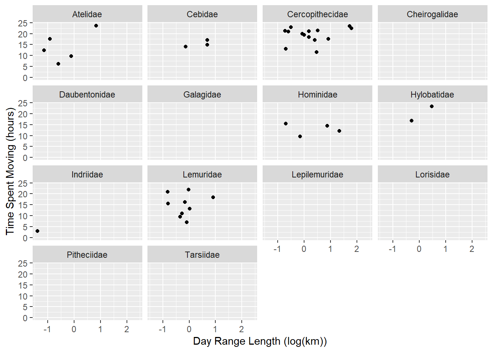
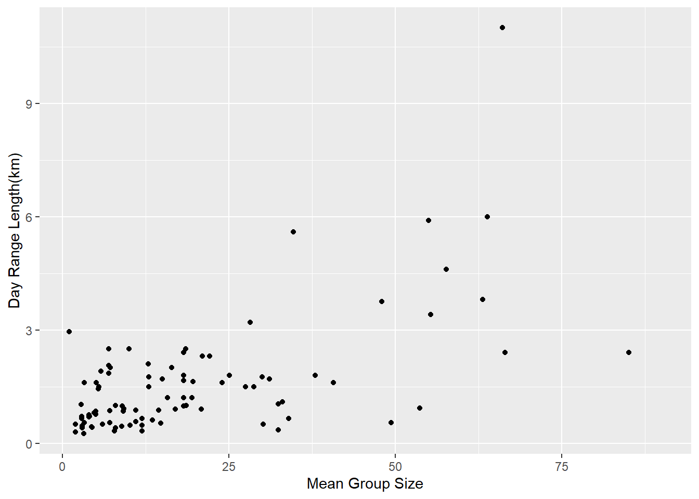
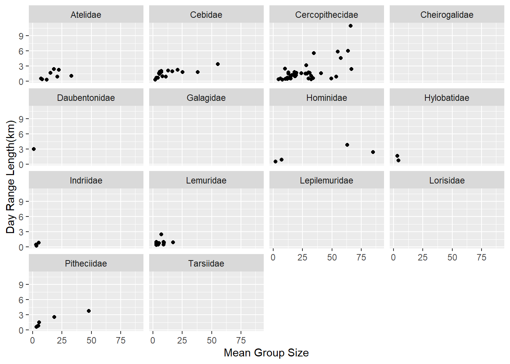
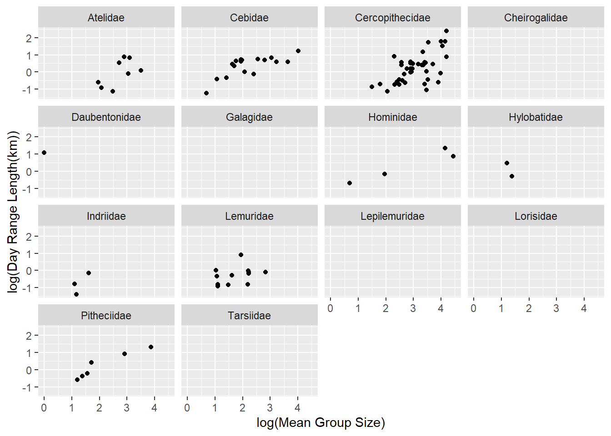
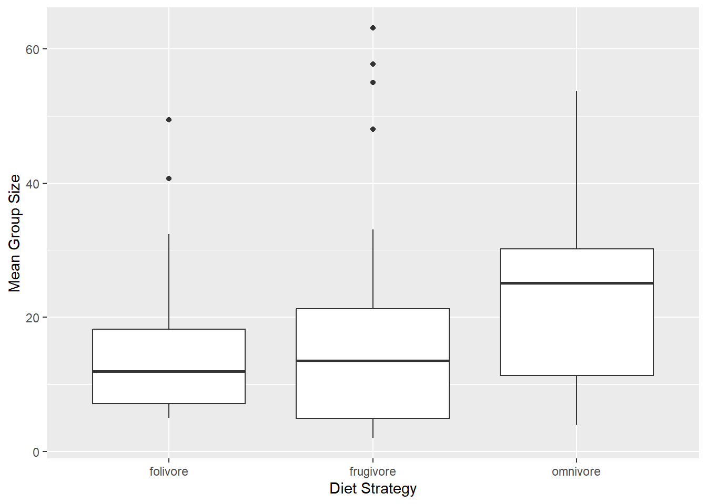
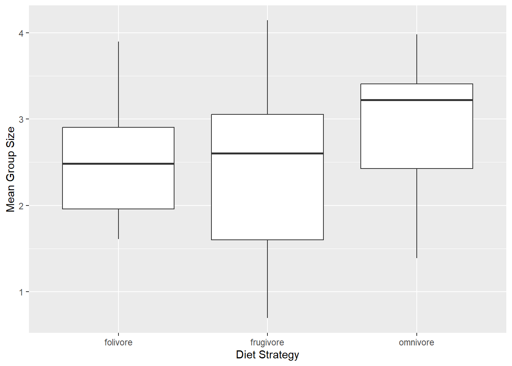

── Attaching core tidyverse packages ──────────────────────── tidyverse 2.0.0 ──
✔ dplyr 1.1.4 ✔ readr 2.1.6
✔ forcats 1.0.1 ✔ stringr 1.6.0
✔ ggplot2 4.0.1 ✔ tibble 3.3.1
✔ lubridate 1.9.4 ✔ tidyr 1.3.2
✔ purrr 1.2.1
── Conflicts ────────────────────────────────────────── tidyverse_conflicts() ──
✖ dplyr::filter() masks stats::filter()
✖ dplyr::lag() masks stats::lag()
ℹ Use the conflicted package (<http://conflicted.r-lib.org/>) to force all conflicts to become errors
f <-"https://raw.githubusercontent.com/difiore/ada-datasets/main/data-wrangling.csv"d <-read_csv(f, col_names =TRUE)
Rows: 213 Columns: 23
── Column specification ────────────────────────────────────────────────────────
Delimiter: ","
chr (6): Scientific_Name, Family, Genus, Species, Leaves, Fauna
dbl (17): Brain_Size_Species_Mean, Body_mass_male_mean, Body_mass_female_mea...
ℹ Use `spec()` to retrieve the full column specification for this data.
ℹ Specify the column types or set `show_col_types = FALSE` to quiet this message.
AF <- d$AdultFemaleAM <- d$AdultMalessex_ratio <- AF / AMsex_ratio # how many females for every male
[1] NA 1.0000000 1.0000000 1.4347826 1.6058394 2.1724138
[7] 1.1298701 1.2941176 1.0000000 1.0000000 NA 1.0000000
[13] 1.0000000 1.0000000 1.0000000 NA 2.0588235 NA
[19] NA 0.5750000 1.0000000 1.0000000 1.0142857 NA
[25] 1.0000000 NA NA NA 1.0000000 1.0000000
[31] 1.0000000 2.0000000 NA 1.6666667 0.5000000 1.1785714
[37] 1.2608696 0.5000000 0.6666667 0.6666667 1.7105263 1.3611111
[43] 1.4705882 1.9714286 NA 3.7500000 4.7500000 NA
[49] 2.7777778 NA 8.5000000 4.0000000 3.0000000 7.0000000
[55] NA NA NA 8.8000000 1.9000000 1.0000000
[61] 5.0000000 4.8879310 5.0000000 NA NA NA
[67] 1.0000000 1.0000000 6.0000000 1.8780488 NA NA
[73] 2.0000000 1.9333333 1.0000000 2.6086957 NA 1.0000000
[79] 6.9333333 0.8571429 NA 0.8333333 0.9079903 1.1666667
[85] 0.9117647 1.0000000 1.0000000 0.6341463 0.9466667 NA
[91] NA 1.0000000 1.0000000 NA NA NA
[97] 2.4444444 NA 1.0000000 NA 1.0000000 1.0000000
[103] 1.1111111 1.0000000 NA NA 1.0000000 1.0000000
[109] 1.1232877 1.2307692 0.6250000 NA 0.8333333 1.0000000
[115] NA 1.0000000 NA 1.0000000 1.0000000 1.8139535
[121] NA NA 1.0000000 NA NA NA
[127] 2.2553191 5.1470588 NA 5.2888889 6.2083333 3.4827586
[133] NA 1.2125000 2.2903226 2.2962963 1.4893617 2.4444444
[139] NA NA 1.0000000 1.0000000 1.0000000 2.0000000
[145] 1.0000000 3.7000000 NA NA NA NA
[151] 1.0000000 1.0000000 NA NA 1.5571429 2.8965517
[157] 2.4305556 2.7714286 8.2000000 2.0746269 1.0000000 1.0000000
[163] 1.9148936 5.1730769 NA 5.9606299 2.8571429 NA
[169] 2.0000000 NA 1.0000000 1.1666667 6.0000000 1.6500000
[175] NA NA 1.2500000 0.9863014 NA 1.6470588
[181] 2.8461538 NA NA NA NA 0.6842105
[187] 0.8750000 1.0000000 NA NA 0.9090909 NA
[193] 0.6296296 0.6000000 NA 0.8900000 1.8372093 6.3888889
[199] 1.0000000 NA NA NA 2.7333333 6.1666667
[205] 15.6000000 3.1764706 2.3846154 2.8000000 NA 3.3809524
[211] 3.8000000 NA 0.5680000
DL <- d$DayLength_kmHR <- d$HomeRange_km2HD <-2*sqrt(HR / pi) # converts home range area to a diameter
DI <- DL / HD # "defensibility index", AKA day range length divided by home range diameterDI
[1] NA NA NA NA NA 0.6506061
[7] NA 1.5413726 NA NA NA NA
[13] 1.9363486 4.1359367 NA NA 1.3499117 NA
[19] 1.7633253 1.8238400 4.0766439 NA 0.7821153 1.7375626
[25] 1.4504293 NA NA NA 1.8422926 2.8206234
[31] 1.3165457 3.1332853 NA NA NA 3.1387951
[37] 5.5145822 NA 8.8622693 5.7468246 2.1911873 1.9839143
[43] 2.9959938 1.5633216 NA NA 1.4891591 NA
[49] NA NA 3.3233510 NA NA 1.2682647
[55] NA NA NA 2.8024956 NA 1.5195626
[61] 1.2396163 NA 1.4462190 NA NA NA
[67] NA NA 1.4770449 NA NA NA
[73] 0.4522843 0.7766504 0.7143891 0.3261739 NA 4.3816931
[79] 0.5336574 2.4149371 NA 2.6481094 2.3045558 0.9842263
[85] NA 3.0789334 0.8798587 0.9828296 2.5390142 NA
[91] NA NA NA NA 15.5975939 NA
[97] 0.3796565 0.7735623 3.8107758 NA NA 2.1393867
[103] 2.3499640 2.5066283 3.5816435 1.5642306 2.4022841 0.6395792
[109] 0.5805145 3.5669946 NA NA 2.5027690 NA
[115] NA NA NA NA NA 0.7557769
[121] NA NA NA NA NA NA
[127] 1.9600055 0.6892232 NA 0.5832721 1.2058643 NA
[133] NA 1.6532619 1.5398954 NA 0.9093276 NA
[139] NA 0.5180341 NA NA NA 2.3779964
[145] NA 0.2982661 1.2351755 NA NA NA
[151] NA NA NA NA 0.4024581 1.0223831
[157] 1.8549372 1.3523103 2.3390404 1.6433707 NA NA
[163] 0.7521128 1.6204537 NA 1.4025468 0.7133998 NA
[169] 3.7156193 NA 0.2249568 0.7188250 2.2513188 1.4353359
[175] NA NA NA NA NA 4.3491385
[181] NA NA 0.2321915 NA NA 3.1706618
[187] NA 3.8922508 NA NA 3.5777255 NA
[193] 6.8742119 NA NA 9.5284851 1.9344744 0.3886362
[199] 1.1880481 7.9760423 NA 5.5821745 2.0571026 NA
[205] 0.8954109 NA NA 0.7405071 0.9054452 0.4392321
[211] NA NA 0.7674733
library(skimr)overall <-ggplot(data = d, mapping =aes(x = DayLength_km, y = Move)) +geom_point() +xlab("Day Range Length (km)") +ylab("Time Spent Moving (hours)") +ylim(0, 24)overall # compares the amount an animal moves in a day with the amount of time that animal moves in a day across all families
Warning: Removed 175 rows containing missing values or values outside the scale range
(`geom_point()`).

byfamily = overall +facet_wrap(vars(d$Family))byfamily # splits the above comparison into individual families
Warning: Removed 175 rows containing missing values or values outside the scale range
(`geom_point()`).

At first glance, there seems to be a weak positive correlation between spending more time moving and covering more distance in a day, both overall and in the families Atelidae, Cercopithecidae, Hylobatidae, and Lemuridae.
overall_log <-ggplot(data = d, mapping =aes(x =log(DayLength_km), y = Move)) +geom_point() +xlab("Day Range Length (log(km))") +ylab("Time Spent Moving (hours)") +ylim(0, 24)overall_log # compares the amount an animal moves in a day with the amount of time that animal moves in a day across all families
Warning: Removed 175 rows containing missing values or values outside the scale range
(`geom_point()`).

byfamily_log = overall_log +facet_wrap(vars(d$Family))byfamily_log # splits the above comparison into individual families
Warning: Removed 175 rows containing missing values or values outside the scale range
(`geom_point()`).

I figured transforming the distance moved might be helpful. but in my opinion it is not.
DLvsGS <-ggplot(data = d, mapping =aes(x = MeanGroupSize, y = DayLength_km)) +geom_point() +xlab("Mean Group Size") +ylab("Day Range Length(km)")DLvsGS # compares mean group size and distance traveled in a day
Warning: Removed 120 rows containing missing values or values outside the scale range
(`geom_point()`).

DLvsGS_family <- DLvsGS +facet_wrap(vars(d$Family))DLvsGS_family # separates the above data by family
Warning: Removed 120 rows containing missing values or values outside the scale range
(`geom_point()`).

Species that live in larger groups seem to travel farther in a day, both overall and in the families Cebidae, Cercopithecidae, and Pitheciidae.
DLvsGS_log <-ggplot(data = d, mapping =aes(x =log(MeanGroupSize), y =log(DayLength_km))) +geom_point() +xlab("log(Mean Group Size)") +ylab("log(Day Range Length(km))")DLvsGS_log # transforms above plots using logarithms
Warning: Removed 120 rows containing missing values or values outside the scale range
(`geom_point()`).
Warning: Removed 120 rows containing missing values or values outside the scale range
(`geom_point()`).

Transforming both variables to logarithms made the differences much clearer; now I would say that the families Atelidae, Hominidae, Lemuridae, and maybe Indriidae show that positive correlation between group size and amount traveled in a day.
library(rlang)
Attaching package: 'rlang'
The following objects are masked from 'package:purrr':
flatten, flatten_chr, flatten_dbl, flatten_int, flatten_lgl,
flatten_raw, invoke, splice
fr <- d$Fruitle <-as.numeric(d$Leaves)
Warning: NAs introduced by coercion
fa <-as.numeric(d$Fauna)
Warning: NAs introduced by coercion
frug <- fr / (le + fa)fol <- le / (fr + fa)ds =case_when(frug >1~"frugivore", fol >1~"folivore", are_na(fr) ==FALSE&are_na(le) ==FALSE&are_na(fa) ==FALSE~"omnivore")ds # groups all animals into their respective diet strategy groups
[1] NA NA "frugivore" "folivore" "folivore" "folivore"
[7] "folivore" "folivore" NA NA NA NA
[13] NA "frugivore" NA NA "frugivore" NA
[19] "frugivore" "frugivore" NA NA "folivore" "frugivore"
[25] "frugivore" "frugivore" NA NA "frugivore" NA
[31] "frugivore" "omnivore" NA NA NA NA
[37] "frugivore" NA NA NA "omnivore" "frugivore"
[43] "frugivore" "frugivore" NA "frugivore" "frugivore" NA
[49] NA NA "frugivore" "frugivore" "frugivore" "frugivore"
[55] NA NA "folivore" "frugivore" NA "frugivore"
[61] "frugivore" "omnivore" "frugivore" "frugivore" NA NA
[67] NA NA "frugivore" "omnivore" NA NA
[73] "folivore" "folivore" "folivore" "frugivore" NA NA
[79] "omnivore" NA NA NA NA "frugivore"
[85] "frugivore" "frugivore" NA NA NA NA
[91] NA NA NA NA NA NA
[97] "folivore" NA NA NA NA "frugivore"
[103] "frugivore" "frugivore" "frugivore" "frugivore" "frugivore" NA
[109] "frugivore" NA NA NA NA NA
[115] NA NA NA NA NA "frugivore"
[121] NA NA NA NA NA "frugivore"
[127] "frugivore" "omnivore" NA "folivore" "frugivore" NA
[133] NA NA NA "frugivore" "folivore" NA
[139] NA NA NA NA NA NA
[145] NA "folivore" "folivore" NA "folivore" NA
[151] NA NA NA NA NA "frugivore"
[157] "frugivore" "frugivore" NA NA NA NA
[163] "folivore" "folivore" "folivore" "folivore" NA NA
[169] "frugivore" NA "frugivore" NA NA NA
[175] NA NA "folivore" "frugivore" "frugivore" "folivore"
[181] NA NA NA NA NA "frugivore"
[187] NA NA NA NA NA NA
[193] NA NA NA NA "omnivore" "omnivore"
[199] "omnivore" NA NA NA "folivore" NA
[205] NA NA NA NA NA NA
[211] NA "frugivore" "frugivore"
d$diet_strategy <- dsd$diet_strategy
[1] NA NA "frugivore" "folivore" "folivore" "folivore"
[7] "folivore" "folivore" NA NA NA NA
[13] NA "frugivore" NA NA "frugivore" NA
[19] "frugivore" "frugivore" NA NA "folivore" "frugivore"
[25] "frugivore" "frugivore" NA NA "frugivore" NA
[31] "frugivore" "omnivore" NA NA NA NA
[37] "frugivore" NA NA NA "omnivore" "frugivore"
[43] "frugivore" "frugivore" NA "frugivore" "frugivore" NA
[49] NA NA "frugivore" "frugivore" "frugivore" "frugivore"
[55] NA NA "folivore" "frugivore" NA "frugivore"
[61] "frugivore" "omnivore" "frugivore" "frugivore" NA NA
[67] NA NA "frugivore" "omnivore" NA NA
[73] "folivore" "folivore" "folivore" "frugivore" NA NA
[79] "omnivore" NA NA NA NA "frugivore"
[85] "frugivore" "frugivore" NA NA NA NA
[91] NA NA NA NA NA NA
[97] "folivore" NA NA NA NA "frugivore"
[103] "frugivore" "frugivore" "frugivore" "frugivore" "frugivore" NA
[109] "frugivore" NA NA NA NA NA
[115] NA NA NA NA NA "frugivore"
[121] NA NA NA NA NA "frugivore"
[127] "frugivore" "omnivore" NA "folivore" "frugivore" NA
[133] NA NA NA "frugivore" "folivore" NA
[139] NA NA NA NA NA NA
[145] NA "folivore" "folivore" NA "folivore" NA
[151] NA NA NA NA NA "frugivore"
[157] "frugivore" "frugivore" NA NA NA NA
[163] "folivore" "folivore" "folivore" "folivore" NA NA
[169] "frugivore" NA "frugivore" NA NA NA
[175] NA NA "folivore" "frugivore" "frugivore" "folivore"
[181] NA NA NA NA NA "frugivore"
[187] NA NA NA NA NA NA
[193] NA NA NA NA "omnivore" "omnivore"
[199] "omnivore" NA NA NA "folivore" NA
[205] NA NA NA NA NA NA
[211] NA "frugivore" "frugivore"
dietstrat <-ggplot(data = d[-which(d$diet_strategy %in%NA),], mapping =aes(x = diet_strategy, y = MeanGroupSize)) +geom_boxplot() +xlab("Diet Strategy") +ylab("Mean Group Size")dietstrat # box plots for the diet strategies compared to mean group size
Warning: Removed 13 rows containing non-finite outside the scale range
(`stat_boxplot()`).

dietstrat_log <-ggplot(data = d[-which(d$diet_strategy %in%NA),], mapping =aes(x = diet_strategy, y =log(MeanGroupSize))) +geom_boxplot() +xlab("Diet Strategy") +ylab("Mean Group Size")dietstrat_log # transforms mean group size to logarithms
Warning: Removed 13 rows containing non-finite outside the scale range
(`stat_boxplot()`).

Frugivores seemingly tend to live in slightly larger groups than folivores, and omnivores seemingly tend to live in the largest groups out of the three.